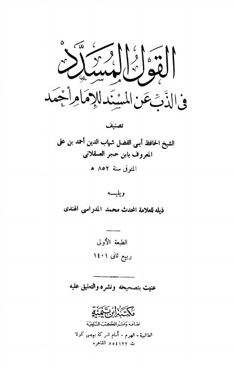

Downloads need an internet connection.
القول المسدد في الذب عن المسند للإمام أحمد- مكتبة ابن تيمية
Authors: أحمد بن علي بن حجر العسقلاني
Publishers: مكتبة ابن تيمية
**▫️ العنوان: القول المسدد في الذب عن المسند للإمام أحمد- مكتبة ابن تيمية** ▪️ المؤلف: #أحمد_بن_علي_بن_حجر_العسقلاني ▫️ الناشر: #مكتبة_ابن_تيمية ▪️ تاريخ النشر: 1401هـ 1981م ▫️ بلد النشر: القاهرة، #مصر ▪️ الطبعة: 1 ▫️ عدد الأجزاء: 1 ▪️ الصفحات: 96 ▫️ نوع الوعاء: #كتاب ▪️ التصنيف الرئيسي: #الحديث_وعلومه ▫️ التصنيف الفرعي: #تخريج ۪